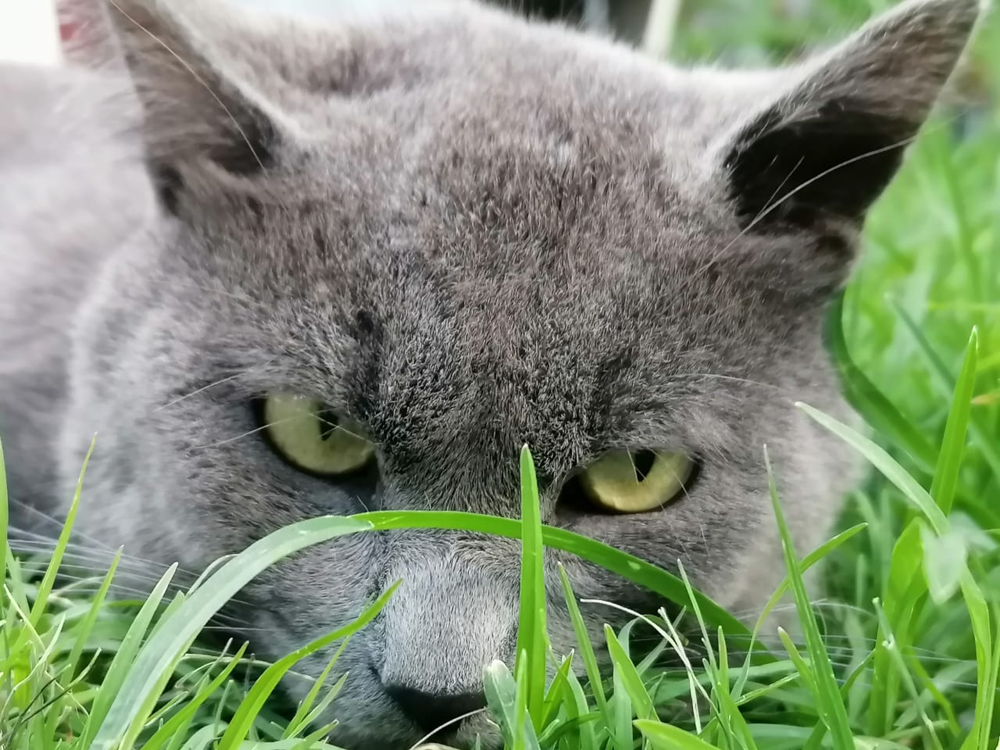
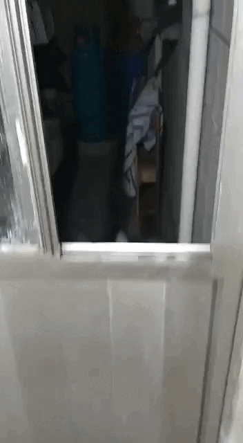
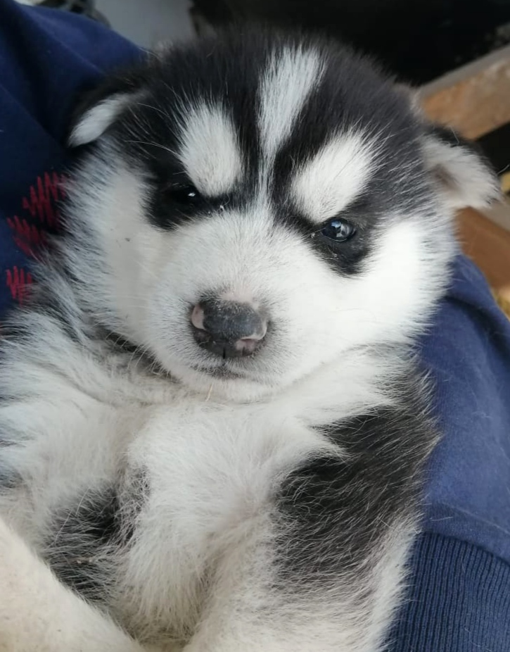
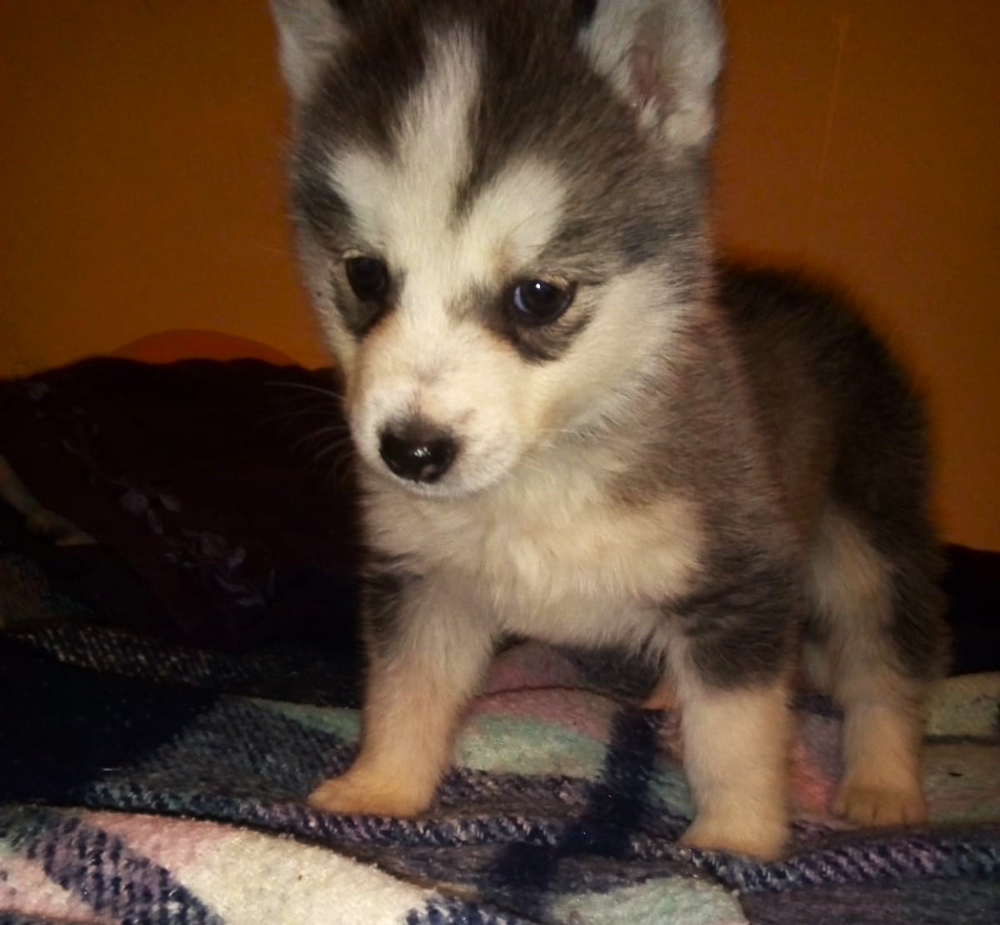
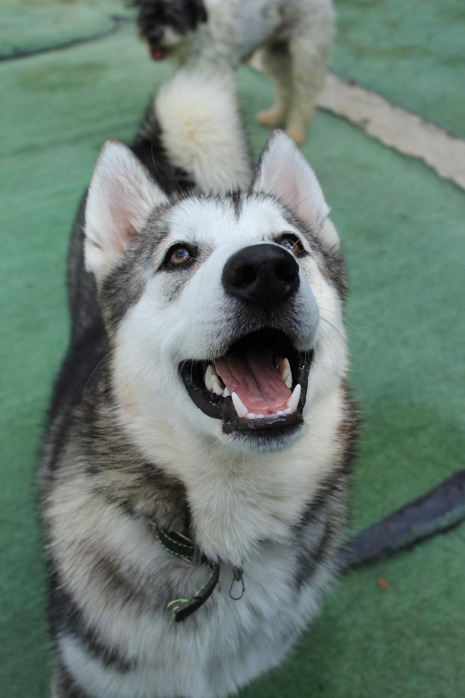

MI GATITO CUCHO
El es Cucho o como le decíamos "cuchin", fue el primer gato que tuve, tenia una mirada muy pesada pero era muy bonito y pachoncito, todos lo querían mucho, le gustaba que lo acariciaran pero solo con los familiares porque le tenía miedo a personas desconocidas, por lo que siempre se iba a esconder. De los recuerdos que tengo de el es que le gustaba jugar mucho con listones, pero también le encantaba dormir en un cojín, era un poco uraño pero le gustaba nuestra compañía, era muy querido. Un día, como siempre lo hacía, salió desde temprano, no sabíamos hacia donde se iba pero siempre regresaba a comer pero desde ese día nunca regresó, hasta la fecha no sabemos que habrá sido de el, creemos que por ser tan lindo y cuidado alguien se lo quedaría o simplemente se fue a un lugar más lejos que ya no supo como regresar. Actualmente ya no tengo gatos de macota pero el fue un lindo compañero en su momento, lo cual me hizo sentir muy bien y que lo llevaré siempre en mis recuerdos y mi corazón.
MI PERRO ANCKOR
El se llama Anckor y es una de mis mascotas hoy en día, es un perro Husky siberiano color gris con blanco. Mi hermano mayor fue el que lo trajo a la casa, recuerdo que cuando llegó con el en una cajita escondido, mi mamá se enojó mucho pero con el tiempo se fue encariñando que se quedó con nosotros. Es un perrito muy tierno, le gusta que lo acaricien, mi familia lo quiere muchísimo, desde que era cachorro y llegó a la casa, se ganó en cariño de todos, es muy juguetón, le gusta salir de paseo, es muy activo, le gusta correr, también dormir, adora los juguetes que pueda morder, destruye muchas cosas, hace hoyos en el jardín pero aún así con todo y sus desastres aquí sigue. Es muy fiel a nosotros pero es muy apegado a mi mamá, practicamente decimos que es su perro porque la sigue a todas partes y solo a ella le obedece, anckor tiene 6 años con nosotros y hace poco lo cruzamos, por lo que nos quedamos con uno de sus cachorros el cual se llama Malek, es un cachorrito apenas. Mi familia le gustan muchos los perros pero estos dos son sus connsentidos (hasta más que nosotros jeje) nos han traido mucha felicidad a la casa, los cuidamos muy bien y esperemos que los tengamos por un largo tiempo con nosotros.
LOS HUSKY
Curiosidades sobre los Husky
Los Husky pertenecen a las rezas de perros denominadas Spitz, que son aquellas razas que cuentan con doble capa de pelaje, una interior que es utilizada para regular y mantener la temperatura corporal y una exterior que es utilizada como un impermeable natural. Una de las características más notables de los Husky es su capacidad para recorrer grandes distancias a una gran velocidad, sin importar las condiciones climatológicas o de carga. La velocidad promedio de los Huskys es de 7.5 km/hr aproximadamente 180 Km por día. La cantidad de energía que requieren para la realización de sus tareas natas, así como las condiciones del medio físico para el que fueron desarrollados hacen que tengan una cantidad de energía superior a cualquier otra raza. Un Husky podría correr durante 9 días seguidos sin requerir alimentos, o podría jalar un trineo por mas de 3 días sin mayor esfuerzo.
El carácter de los Husky es muy conocido por ser tercos, esto se debe a que los esquimales los criaron para vagar libremente y cazaran por sí mismos cuando no los necesitaban para ninguna tarea. Este es un rasgo provoca que sean difíciles de domesticar, aunque es verdad que disfrutan de la compañía humana. Debido a sus características de energía y a su fortaleza física son una excelente compañía para realizar tu rutina diaria de ejercicio. Trotaron y correrán a tu ritmo sin ningún problema, esto también evidencia que es necesario que puedan tomar de 40 a 60 minutos diarios de ejercicio. La mayoría de los Huskys tienden a salir de espacios confinados y buscar lugares abiertos. Esto implica que salten, rodeen y utilicen su curiosidad para buscar salidas de los lugares confinados. Por lo cual es importante que cuentes con un espacio libre para tu Husky. En México la presencia de esta raza de perritos es aún muy baja, sin embargo, no es raro que vamos un Huskys paseando por los parques y jardines de la ciudad, si cuentas con un perrito de esta raza, recuerda que es de suma importancia que lo ayudes a consumir toda su energía.

Los Huskies también se adaptan maravillosamente a la vida familiar. Su naturaleza juguetona y afectuosa permite calificar al Husky como compañero ideal para niños y adultos por igual. Además, son conocidos por su paciencia y tolerancia, lo que los hace aptos para vivir en hogares con múltiples miembros de la familia o con otros animales. La comunicación del Husky va más allá de ladridos simples. Estos perros tienen una amplia variedad de vocalizaciones que van desde aullidos melódicos hasta gruñidos y gemidos. Su capacidad para expresar emociones de manera tan diversa y su tendencia a "hablar" con sus dueños hacen que la interacción con un Husky sea única y llena de diversión. Comprender su lenguaje canino es esencial para fortalecer el vínculo entre el dueño y el perro.
El Husky es de las mejores razas adaptadas al frío extremo gracias a su pelaje denso y aislante. Esta característica única ha permitido que los Huskies destaquen en entornos helados, siendo la elección ideal para trineos tirados por perros en regiones árticas. Su resistencia al frío no solo es práctica, sino que también agrega a la majestuosidad de estos perros nórdicos. Aunque generalmente son perros fuertes y no se enferman con regularidad, es imprescindible ofrecerles todos los nutrientes que necesita.El Husky no solo es resistente al frío, sino que también es un corredor excepcional. Su anatomía atlética y sus patas fuertes le permiten correr largas distancias sin fatigarse fácilmente. Este instinto para correr proviene de su historia como perro de trineo en Siberia, donde se les utilizaba para transportar cargas pesadas durante largas jornadas. Aunque hoy en día, muchos Huskies aman correr. Incluso, el ejercicio en Huskys es algo vital para su bienestar físico y mental.
Background
Los Gatos
Los felinos son muy fáciles de distinguir por sus cualidades, características e incluso por sus hábitos. Además, son los únicos animales que han decidido domesticarse por sí solos. En términos de desarrollo, el primer año de vida de un gato es igual a los primeros 15 años de una vida humana. Después de su segundo año, un gato tiene 25 años equivalentes al de un humano. Y después de los dos años, cada año de vida de un gato equivale a unos 7 años humanos. Adicionalmente, los gatos pueden vivir hasta un poco más que los 16 años. Los gatos se comunican a través de vocalizaciones y entre ellas la más popular es el maullido. También, cabe mencionar que, junto con el perro, son los animales más populares para escoger como mascota, debido a su adaptabilidad y características. Estos datos curiosos de los gatos que te brindamos son tan sólo algunas de las miles de particularidades que posee cada maravilloso gato. Sin duda, son unas mascotas ideales para brindarte amor, felicidad y mucha curiosidad: Tienen una flexibilidad y agilidad impresionante, pueden saltar desde más de 3 metros de altura, los gatos pueden rotar sus orejas 180 grados, los gatos pueden pasar hasta 14 horas dormidos, debido a su naturaleza nocturna, los gatos suelen ser mucho más hiperactivos en la tarde, la audición del gato promedio es al menos cinco veces más aguda que la de un adulto humano, en la raza de gato más grande, el macho promedio pesa aproximadamente 9 kilos, los gatos domésticos pasan cerca del 70 por ciento del día durmiendo, y 15 por ciento del día acicalándose, un gato no puede ver directamente debajo de su nariz, tienen uno de los sistemas sensoriales más sofisticados del mundo, la mayoría de los gatos no tiene pestañas, los gatos tienen cinco dedos en cada pata delantera, pero sólo cuatro en la parte posterior. Sin embargo, no es raro que los gatos tengan dedos extra. ¡El gato con la mayor cantidad de dedos conocidos tenía 32, ocho en cada pata!algunas personas creen que si sueñas con un gato blanco, te seguirá la buena suerte. Los maullidos no son un lenguaje innato para gatos, ¡los desarrollaron para comunicarse con los humanos!
DATOS CURIOSOS DE LOS HUSKY
El Husky es un perro de tamaño mediano cuyas proporciones insinúan un equilibrio perfecto entre potencia, velocidad y resistencia. Con su pelaje de doble manto y longitud media, sus orejas erguidas y su cola tipo cepillo, esta raza puede presentar colores y manchas muy diversas, incluyendo el blanco, con algunos ejemplares de colorido notable. Los machos adultos miden entre 53 y 60 cm y las hembras, entre 51 y 56 cm. Los machos pesan de 20 a 27 kg y las hembras, de 16 a 23 kg. Los orígenes de esta raza se remontan a los nómadas del norte de Siberia, donde los perros eran cruciales para la supervivencia de los nómadas. Se usaban como perros de trineo para varios tipos de transporte, pero también para cazar y para el pastoreo de renos. También se dice que eran una buena fuente de calor para los nómadas durante las frías noches, por lo que no es de extrañar que te los encuentres durmiendo cerca de los niños. Gracias a su versatilidad, comprendemos fácilmente por qué eran un miembro de la familia tan importante. Más tarde, cuando los perros se importaron a Alaska, fueron usados como perros de trineo. Cuando descubrieron la velocidad de estos peludos, los norteamericanos empezaron a criar perros para distintos tipos de competición, y así fue cómo nació el husky siberiano. Hoy en día, el husky siberiano sigue gozando de buena fama como perro de trineo y como cariñoso compañero y miembro de la familia. Si te interesa conocer un poco más de esta raza como los Husky, a continuación se encuentra un video de 10 curiosidades de ellos.
Imágenes con filtros
Este es Anckor mi perro, esta foto se la tomamos cuando tenía 3 años, en ese momento lo sacamos a pasear, alguien más le estaba haciendo captar su atención para poder tomarle la foto, captamos muy bien su cara de felicidad que nos gustó demasiado como quedó. A continuación podemos observar una serie de filtros aplicados para observar la manera que podemos variar.
